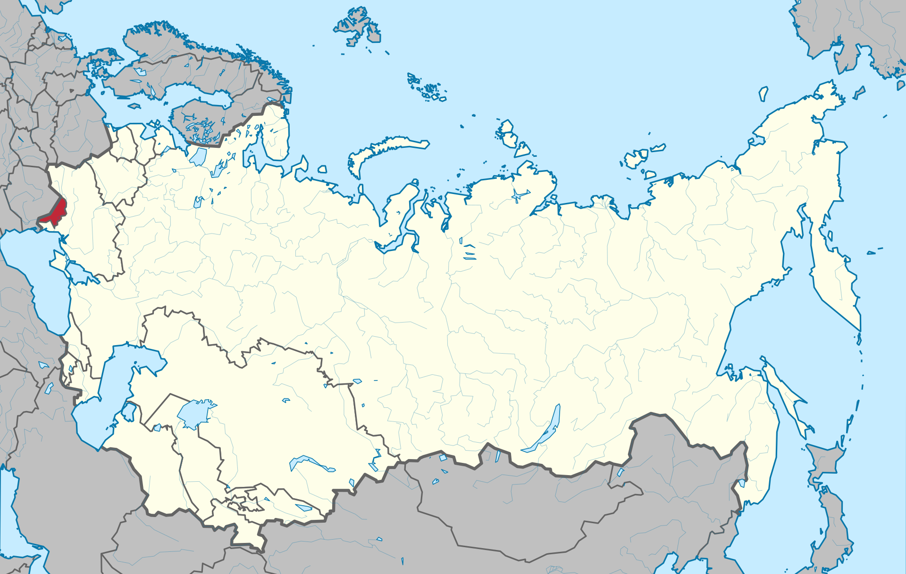

ASSR
Moldavian Soviet Socialist Republic (Moldavian SSR, MSSR, Moldovan Republic of Sovetika Sochialist Moldoveneasca, modern Republica Sovietică Socialistă Moldovenească) - one of the republics of the Union of Soviet Socialist Republics (August 2, 1940 - August 27, 1991). It was located in the extreme southwest of the European part of the USSR. In the west it bordered on Romania, in the east, north and south - on the Ukrainian SSR. The area is 33.7 thousand km². Population 4337 thousand people. (1989). The capital is the city of Chisinau. Since June 5, 1990, the official name of the Soviet Socialist Republic of Moldova (SSR Moldova, RSS Moldova).
Important cities (thousand inhabitants, 1989): Chisinau (667.1), Tiraspol (181.9), Balti (158.5), Bender (130.0). During the years of Soviet power, the cities of Rybnitsa, Ungheni, Edinets, Floresti, Comrat, Ceadir-Lunga grew from former villages and small townships.
Map of the ASSR from November 29, 1920 - August 23, 1990
[BACK TO HOME] [BACK TO REPUBLICS]